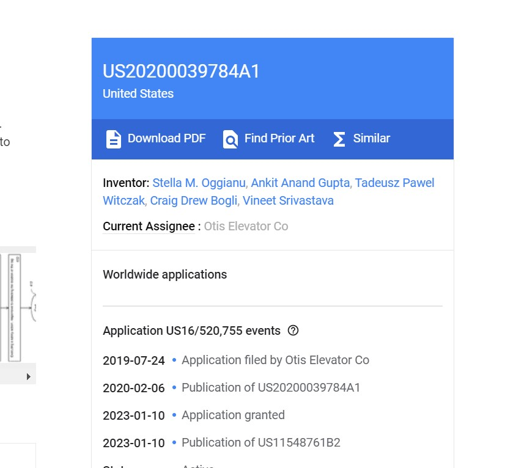
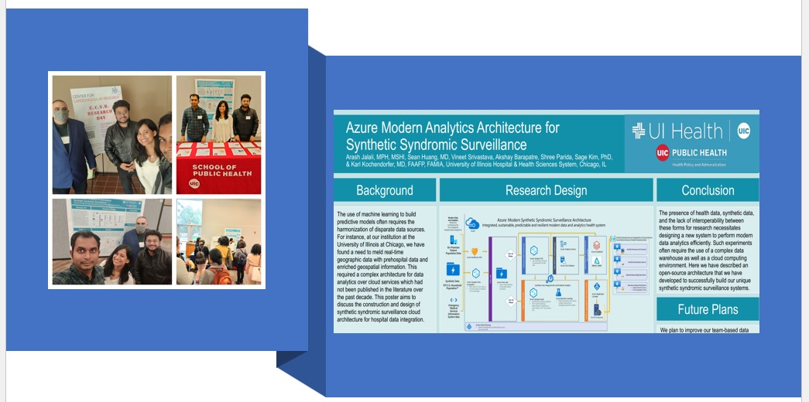

About memy stats
What keeps me going ?
In a rapidly evolving field like AI/ML, it's important to stay ahead of the curve.
That's why I'm constantly seeking out new technologies, techniques, and approaches to refine my skills and expand my knowledge.
I'm not content to rest on my laurels - I'm always striving to improve and innovate.But at the end of the day, what truly motivates me
is the impact my work can have on people's lives.
Whether it's improving healthcare outcomes, making transportation more efficient, or
enhancing the customer experience, I believe that the AI/ML algorithms have the power to create positive change.
And that's a mission worth pursuing with everything I've got.
Let's join forces and make a difference together!
3+
Years
Work-Experience
USD 200k+
Revenue Generated
Industrial Projects and Research
2+
Computer-Vision and Healthcare Analytics,
Research paper
10+
Junior Engineers,
Supervised & Managed directly
My Skills
Professional Experience
2023 'Jan - present
Graduate Research Assistant - UI Health (Cook County Department of Public Health)
Working on Image Segmentation/Augmentation/image-box bound creation for identifying the safe/un-safe neighborhoods using different computer-vision & deep learning (CNN) architectures, AWS Cloud and ArcGIS
2022 'July - 2022 'February
Senior ML Engineer - Magic EdTech, NY HQ
Designed the end-to-end ML Pipeline on Course Recommendation System on AWS platform: Big Data Engineering and Machine Learning Pipeline.
Tech-Stack: AWS EC2, S3, Kafka, MongoDB, Deployment using GitHub Actions.
2021 'Feb - 2021 'Oct
Consultant - Capgemini India
Continuous Glucose Monitoring System (CGMS) using BLE, IOT Healthcare Analytics, Python, EDA & Feature Engineering, BLE packets debugging & Automation.
2019 'Oct - 2021 'Feb
Senior Software Engineer - Mirafra Technologies India
Smart Building Automation, Zigbee, Data Analysis and Machine Learning, Python, Data pipelining and Cloud Deployments, Object Tracking using Computer Vision
2016 'Aug - 2019 'Feb
Engineer - L&T Technologies Services India
Indoor Localization & People Tracking using BLE, Predictive Machine learning models- such as KNN, Linear Regression, BLE RSSI Filtering- Kalman Filter, Moving Average, Published Patent on designing a fine-tuned Trilateration Algorithm for indoor localization, Python, Embedded C
Education
2022 - present
Master's in Business Analytics (Current CGPA: 3.78/4) - University of Illinois at Chicago, USA
Data Mining, Business Statistics, Big Data Analytics, Statistical Machine Learning, Business Data Visualization
2012-2016
Bachelor's in Electronics and Communication Engineering - VIT University, Tamil Nadu, India
Wireless Communications, IOT, Wireless data analytics, Embedded Programming
What my colleagues/supervisors say about me
My PortfolioMy Work
Allow me to showcase a few of my work samples and industrial projects that I have completed across various data platforms..

My Research WorkResearch/Patent
>> (Click Here) US Patent: Detecting Elevator Mechanics inside Elevator Systems.- RSSI data analysis & creation of fine-tuned Trilateration Algorithm
>> (Click Here) Working on the healthcare-research as part of the synthetic syndromic surveillance project, presented our research work poster at 2022 Institute for Public Health and Medicine Population Health Forum at Northwestern University, nominated as a finalist for the Rowland “Bing” Chang excellence in Research Award
Patent

Healthcare Analytics UI Health Research Work/Paper

My BlogsMy Blogs

Contact MeContact
Contact Details
Let's keep in touch, feel free to reach out to me using any of the following method.